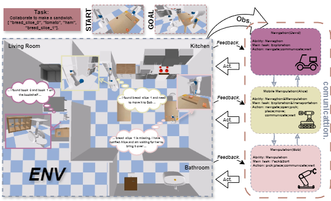
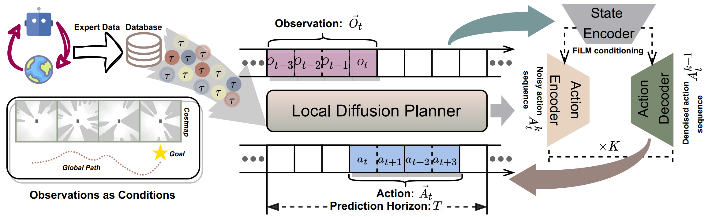
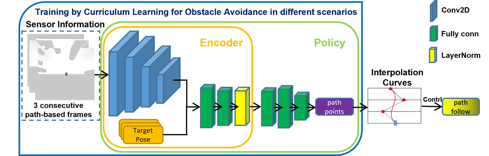

|
Wenhao Yu I am currently pursuing a PhD at University of Science and Technology of China (USTC) advised by Prof. Yanyong Zhang. My M.S. is also from USTC and I was advised by Prof. Jianmin Ji. Before that, I received my Bachelor's degree in Computer Science from Qingdao University (QDU) in 2021. I'm broadly interested in AI for robotics and more focused on learning-based robot decision-making and planning: Robot Navigation, Autonomous Driving, and Embodied AI. |

|
News• [2024.11] I am looking for a research intern on embodied AI and ML. If you have any related needs, please contact me. Thank you very much! • [2024.6] A papper is accepted by IROS 2024. Looking forward to seeing you in Abu Dhabi, UAE. • [2024.1] A papper is accepted by ICRA 2024. Looking forward to seeing you in Yokohama, Japan. |
Publications |
|

|
MHRC: Closed-loop Decentralized Multi-Heterogeneous Robot Collaboration with Large Language Models
Wenhao Yu, Jie Peng, Yueliang Ying, Sai Li, Jianmin Ji*, Yanyong Zhang, arXiv, 2409.16030 project page / code / arXiv LLMs are used to realize the collaboration of multiple heterogeneous robots (mobile robot, manipulation robot, and mobile manipulation robot), including three tasks: make sandwich, sort solids, and pack objects. |
|

|
LDP: A Local Diffusion Planner for Efficient Robot Navigation and Collision Avoidance
Wenhao Yu, Jie Peng, Huanyu Yang, Junrui Zhang, Yifan Duan, Jianmin Ji*, Yanyong Zhang, IROS, 2024 project page / code / arXiv Model the multi-modal expert policy distribution with multiple scenarios and preferences by diffusion model for robot navigation and collision avoidance. |
|

|
PathRL: An End-to-End Path Generation Method for Collision Avoidance via Deep Reinforcement Learning
Wenhao Yu, Jie Peng, Quecheng Qiu, Hanyu Wang, Lu Zhang, Jianmin Ji*, ICRA, 2024 project page / code / arXiv a novel end-to-end DRL-based method, PathRL, that directly outputs navigation paths without relying on the supervised learning paradigm and iscompetent for a variety of complex scenarios. |
Miscellanea |
|
The website template is adapted from Jon Barron's website. |